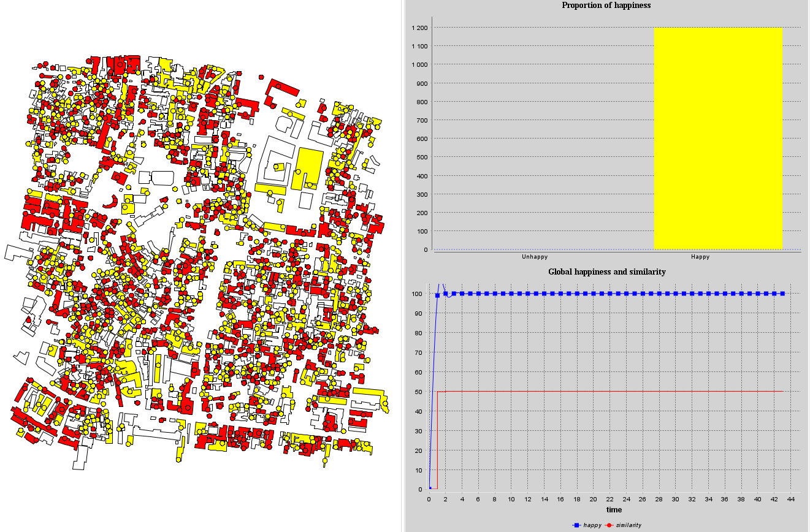
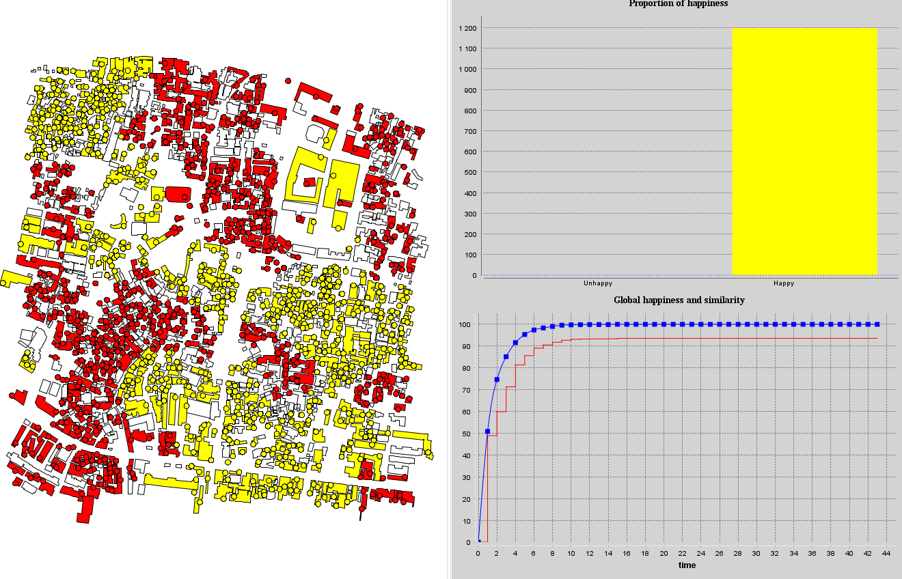
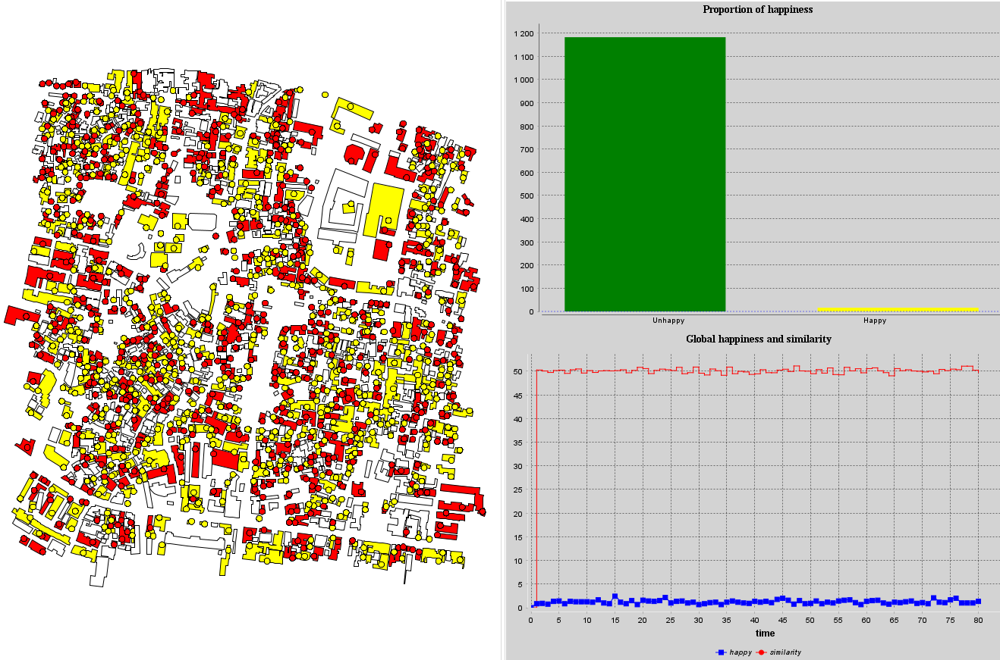
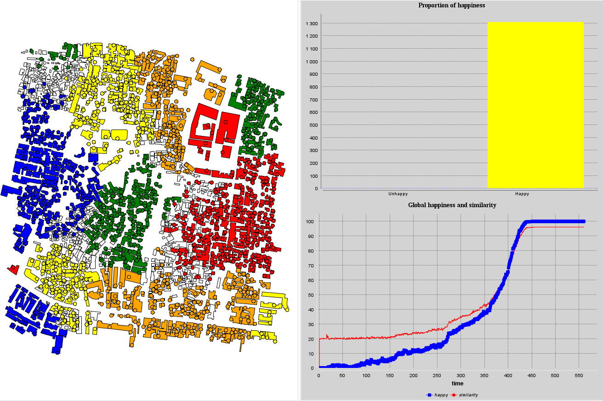

Pour ce travail pratique sur GAMA je vais travailler sur le modèle Segregation
Le modèle a pour but de simuler le comportement communautaire des êtres humains, à savoir le fait qu'un humain a une préférence (variable) à être proche de ceux de son groupe et loin des autres.
L'environnement est une carte qui représente un quartier d'une ville vue du dessus. Le quartier est composé de bâtiments de tailles variables. Au niveau du code il correspond à une liste de species appelées space. Un space correspond à un endroit habitable par un ou plusieurs agents ( people) selon son attribut de capacité (capacity) .
peoplepercent_similar_wantedpeople va percevoir les autres et définir s'il est satisfait ou non (is_happy).Les agents sont ici les people ils se présentent sous la forme de cercles de couleurs.
les people possèdent comme attributs:
people qui correspond à ses voisins.current_building de type space dans lequel il se trouve.is_happy de type booléen, il est calculé en fonction du voisinage (total_nearby) et (percent_similar_wanted).Les people peuvent:
move_to_new_placereflex migrate quand il ne sont pas satisfait de leur localisation actuelle , dans ce cas ils feront appel à move_to_new_place.spaces.people.people à bouger, il changeront de place par réflexe.Dans les études avec deux communautés on se concentrera sur l'influence de percent_similar_wanted sur la répartition des groupes dans la carte:
percent_similar_wanted |
observations | |
|---|---|---|
| 0.05 | On remarque que l'intégralité de la population est très rapidement joyeuse et la répartition des groupes est diversifiée |  |
| 0.5 | On remarque que l'intégralité de la population est moins rapidement joyeuse et des régions de la carte sont uniformément composée que d'un seul groupe |  |
| 0.9 | La quasi intégralité de la population n'est pas satisfaite, et la répartition des groupes est sans cesse diversifiée |  |
Dans le cas d'une analyse avec 5 groupes existants et percent_similar_wanted mis à 50% nous avons une satisfaction totale qui croît plus lentement. Cela peut s'expliquer par le fait qu'un individu a plus de chance d'être entouré d'autres d'un groupe différent, donc à chaque itération il sera plus probable qu'une part des individus soient encore insatisfaits. En terme de répartition les 5 groupes se concentrent dans des régions bien délimitées.

percent_similar_wantedpersonnel, en y initialisant à chaque individu (people) un taux compris entre $0$ et $1$ comme on pourrait faire ici:species base {
rgb color;
//List of all the neighbours agents
list<base> my_neighbours;
// FEATURE: self similarity preference
float similiraty_preference <- rnd(1.0);
//computation of the similar neighbours
int similar_nearby ->
(my_neighbours count (each.color = color))
;
//Computation of the total neighbours nearby
int total_nearby ->
length (my_neighbours)
;
//Boolean to know if the agent is happy or not
bool is_happy -> similar_nearby >= (similiraty_preference * total_nearby ) ;
}
percent_similar_wanted.